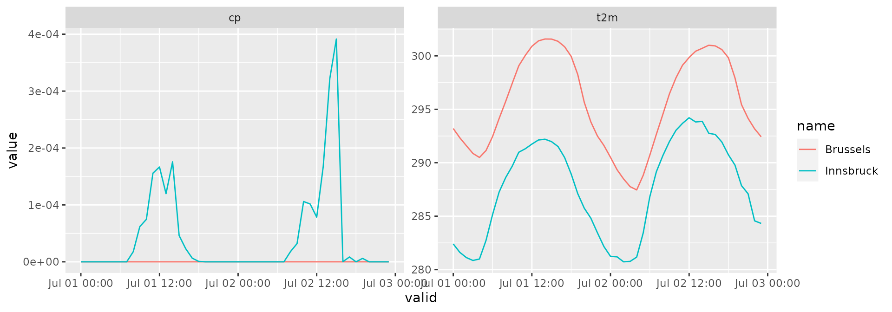
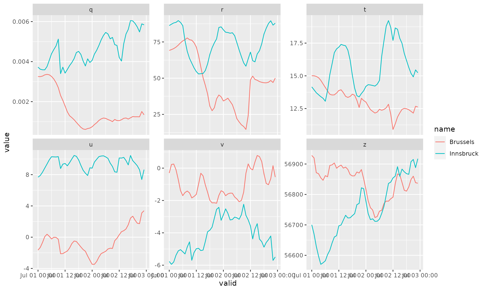

This example shows how to download gridded analysis data. The data set is based on ECMWFs latest ERA5 reanalysis. For details on the basic use of eupp gridded functionality please have a look at the Getting started article.
Gridded analysis data (based on ECMWFs ERA5 reanalysis) is available for a series of surface and pressure level fields introcuded below.
| product | level | param | description |
|---|---|---|---|
| analysis | surface | 2t | 2 metre temperature |
| analysis | surface | 10u | 10 metre U wind component |
| analysis | surface | 10v | 10 metre V wind component |
| analysis | surface | tcc | Total cloud cover |
| analysis | surface | tp | Total precipitation |
| analysis | surface | cape | Convective available potential energy |
| analysis | surface | stl1 | Soil temperature level 1 |
| analysis | surface | sshf | Surface sensible heat flux |
| analysis | surface | slhf | Surface latent heat flux |
| analysis | surface | tcw | Total column water |
| analysis | surface | tcwv | Total column water vapour |
| analysis | surface | swvl1 | Volumetric soil water layer 1 |
| analysis | surface | ssr | Surface net solar radiation |
| analysis | surface | str | Surface net thermal radiation |
| analysis | surface | sd | Snow depth |
| analysis | surface | cp | Convective precipitation |
| analysis | surface | cin | Convective inhibition |
| analysis | surface | ssrd | Surface solar radiation downwards |
| analysis | surface | strd | Surface thermal radiation downwards |
| analysis | surface | 10fg | 10 metre wind gust since previous post-processing |
| analysis | surface | mx2t | Maximum temperature at 2 metres since previous post-processing |
| analysis | surface | mn2t | Minimum temperature at 2 metres since previous post-processing |
When downloading analysis date, the argument steps (eupp_config()) defines the time of the day of the data to be processed.
conf <- eupp_config("analysis", "surface",
param = c("2t", "cp"),
date = "2018-07-01",
steps = 0:23, # 00 to 23 UTC
cache = "_cache")
# Loading inventory for a quick check
inv <- eupp_get_inventory(conf)
table(inv$valid)##
## 2018-07-01 00:00:00 2018-07-01 01:00:00 2018-07-01 02:00:00 2018-07-01 03:00:00
## 2 2 2 2
## 2018-07-01 04:00:00 2018-07-01 05:00:00 2018-07-01 06:00:00 2018-07-01 07:00:00
## 2 2 2 2
## 2018-07-01 08:00:00 2018-07-01 09:00:00 2018-07-01 10:00:00 2018-07-01 11:00:00
## 2 2 2 2
## 2018-07-01 12:00:00 2018-07-01 13:00:00 2018-07-01 14:00:00 2018-07-01 15:00:00
## 2 2 2 2
## 2018-07-01 16:00:00 2018-07-01 17:00:00 2018-07-01 18:00:00 2018-07-01 19:00:00
## 2 2 2 2
## 2018-07-01 20:00:00 2018-07-01 21:00:00 2018-07-01 22:00:00 2018-07-01 23:00:00
## 2 2 2 2For details how to download the data defined by the configuration above please visit the Getting started article. As there are some specialities when handling analysis data here is a short example.
Therefore we are downloading analysis data for three consecutive days (could be done for e.g., a month). Again surface data, 2m temperature and total precipitation.
conf2 <- eupp_config("analysis", "surface",
param = c("2t", "cp"),
date = as.Date("2018-07-01") + 0:1,
steps = 0:23, # 00 to 23 UTC
cache = "_cache")
# Downloading grib file
eupp_download_gridded(conf2, "_analysis.grb", overwrite = TRUE)The eupp package downloads the required GRIB messages even if they are spread over multiple files on the data store - and puts them into one local file.
We are interested in bilinearely interpolated values for the following two locations:
library("sf")
locations <- data.frame(name = c("Innsbruck", "Brussels"),
lon = c(11.39, 4.35),
lat = c(47.27, 50.85))
(locations <- st_as_sf(locations, coords = c("lon", "lat"), crs = 4326))## Simple feature collection with 2 features and 1 field
## Geometry type: POINT
## Dimension: XY
## Bounding box: xmin: 4.35 ymin: 47.27 xmax: 11.39 ymax: 50.85
## Geodetic CRS: WGS 84
## name geometry
## 1 Innsbruck POINT (11.39 47.27)
## 2 Brussels POINT (4.35 50.85)Default use:
ip1 <- eupp_interpolate_grib("_analysis.grb", at = locations,
atname = "name", bilinear = TRUE)
head(ip1, n = 4)## init valid step geometry name cp
## 1 2018-07-01 00:00:00 2018-07-01 00:00:00 0 POINT (11.39 47.27) Innsbruck NA
## 2 2018-06-30 18:00:00 2018-07-01 00:00:00 6 POINT (11.39 47.27) Innsbruck 0
## 3 2018-07-01 01:00:00 2018-07-01 01:00:00 0 POINT (11.39 47.27) Innsbruck NA
## 4 2018-06-30 18:00:00 2018-07-01 01:00:00 7 POINT (11.39 47.27) Innsbruck 0
## t2m
## 1 282.4057
## 2 NA
## 3 281.6158
## 4 NANote: When looking at the first two lines one can see that the same valid time stamp (when the analysis is valid) occurs twice. The reason is that the 2m temperature is a ‘direct’ field from the analysis process, total precipitation (as an example) is a short-term forecast and thus initialized earlier and showing a forecast step.
We can get around this by setting ignore_init = TRUE. eupp now combines the data on the valid time stamp only. Spot the difference:
ip2 <- eupp_interpolate_grib("_analysis.grb", at = locations,
atname = "name", bilinear = TRUE,
ignore_init = TRUE)
head(ip2, n = 4)## valid geometry name cp t2m
## 1 2018-07-01 00:00:00 POINT (11.39 47.27) Innsbruck 0 282.4057
## 2 2018-07-01 01:00:00 POINT (11.39 47.27) Innsbruck 0 281.6158
## 3 2018-07-01 02:00:00 POINT (11.39 47.27) Innsbruck 0 281.1281
## 4 2018-07-01 03:00:00 POINT (11.39 47.27) Innsbruck 0 280.8568We will, however, lose some meta information (compared to the version above). In case this is important wide = FALSE returns one line in the data.frame for each message in the GRIB file alongside with all the loaded meta information (in this case ignore_init has no effect).
ip3 <- eupp_interpolate_grib("_analysis.grb", at = locations,
atname = "name", bilinear = TRUE,
wide = FALSE)
head(ip3, n = 4)## path domain levtype step_char
## 1 data/ana/surf/EU_analysis_surf_params_2018-07.grb g sfc 0
## 2 data/ana/surf/EU_analysis_surf_params_2018-07.grb g sfc 6
## 3 data/ana/surf/EU_analysis_surf_params_2018-07.grb g sfc 0
## 4 data/ana/surf/EU_analysis_surf_params_2018-07.grb g sfc 7
## param class type stream expver offset length param_id init
## 1 t2m ea an oper 0001 0 23358 167 2018-07-01 00:00:00
## 2 cp ea fc oper 0001 362640 23358 143 2018-06-30 18:00:00
## 3 t2m ea an oper 0001 506040 23358 167 2018-07-01 01:00:00
## 4 cp ea fc oper 0001 868680 23358 143 2018-06-30 18:00:00
## number step valid geometry value name
## 1 NA 0 2018-07-01 00:00:00 POINT (11.39 47.27) 282.4057 Innsbruck
## 2 NA 6 2018-07-01 00:00:00 POINT (11.39 47.27) 0.0000 Innsbruck
## 3 NA 0 2018-07-01 01:00:00 POINT (11.39 47.27) 281.6158 Innsbruck
## 4 NA 7 2018-07-01 01:00:00 POINT (11.39 47.27) 0.0000 InnsbruckThis can be handy in some situations.
library("ggplot2")
ggplot(ip3) +
geom_line(aes(x = valid, y = value, color = name)) +
facet_wrap("param", scales = "free_y")
| product | level | param | description |
|---|---|---|---|
| analysis | pressure | z (500) | Geopotential |
| analysis | pressure | u (700) | U component of wind |
| analysis | pressure | v (700) | V component of wind |
| analysis | pressure | q (700) | Specific humidity |
| analysis | pressure | t (850) | Temperature |
| analysis | pressure | r (850) | Relative humidity |
When downloading analysis date, the argument steps (eupp_config()) defines the time of the day of the data to be processed.
conf <- eupp_config("analysis", "pressure",
date = "2018-07-01",
steps = 0:23,
cache = "_cache")
inv <- eupp_get_inventory(conf)
table(inv$valid)##
## 2018-07-01 00:00:00 2018-07-01 01:00:00 2018-07-01 02:00:00 2018-07-01 03:00:00
## 6 6 6 6
## 2018-07-01 04:00:00 2018-07-01 05:00:00 2018-07-01 06:00:00 2018-07-01 07:00:00
## 6 6 6 6
## 2018-07-01 08:00:00 2018-07-01 09:00:00 2018-07-01 10:00:00 2018-07-01 11:00:00
## 6 6 6 6
## 2018-07-01 12:00:00 2018-07-01 13:00:00 2018-07-01 14:00:00 2018-07-01 15:00:00
## 6 6 6 6
## 2018-07-01 16:00:00 2018-07-01 17:00:00 2018-07-01 18:00:00 2018-07-01 19:00:00
## 6 6 6 6
## 2018-07-01 20:00:00 2018-07-01 21:00:00 2018-07-01 22:00:00 2018-07-01 23:00:00
## 6 6 6 6
table(inv$levelist, inv$param)##
## q r t u v z
## 500 0 0 0 0 0 24
## 700 24 0 0 24 24 0
## 850 0 24 24 0 0 0Same as for the ‘surface analysis’ variable shown in the previous sections. For demonstration the configuration is adjusted to download pressure analysis for two consecutive days (all parameters).
conf2 <- eupp_config("analysis", "pressure",
date = as.Date("2018-07-01") + 0:1,
steps = 0:23, # 00 to 23 UTC
cache = "_cache")
# Downloading grib file
eupp_download_gridded(conf2, "_pressure.grb", overwrite = TRUE)Interpolating the data for the the same two locations (see object locations above). Basic use:
ip4 <- eupp_interpolate_grib("_pressure.grb", at = locations,
atname = "name", bilinear = TRUE)
head(ip4, n = 4)## init valid step geometry name
## 1 2018-07-01 00:00:00 2018-07-01 00:00:00 0 POINT (11.39 47.27) Innsbruck
## 2 2018-07-01 01:00:00 2018-07-01 01:00:00 0 POINT (11.39 47.27) Innsbruck
## 3 2018-07-01 02:00:00 2018-07-01 02:00:00 0 POINT (11.39 47.27) Innsbruck
## 4 2018-07-01 03:00:00 2018-07-01 03:00:00 0 POINT (11.39 47.27) Innsbruck
## q r t u v z
## 1 0.003724231 86.30977 14.15409 7.677462 -5.771023 56700.26
## 2 0.003619715 87.25610 13.93414 7.891758 -5.945953 56670.10
## 3 0.003590700 88.10528 13.71038 8.318286 -5.798636 56629.55
## 4 0.003589477 88.48817 13.55705 8.844135 -5.383819 56597.49As the current pressure level data set does not contain any short-term forecasts the wide format is not sparse. In case needed, the same functionality is available. E.g., getting the long format for easy plotting …
ip5 <- eupp_interpolate_grib("_pressure.grb", at = locations,
atname = "name", bilinear = TRUE,
wide = FALSE)
head(ip5, n = 4)## path domain levtype
## 1 data/ana/pressure/EU_analysis_pressure_params_2018-07.grb g pl
## 2 data/ana/pressure/EU_analysis_pressure_params_2018-07.grb g pl
## 3 data/ana/pressure/EU_analysis_pressure_params_2018-07.grb g pl
## 4 data/ana/pressure/EU_analysis_pressure_params_2018-07.grb g pl
## levelist step_char param class type stream expver offset length param_id
## 1 500 0 z ea an oper 0001 0 23358 129
## 2 500 0 z ea an oper 0001 23358 23358 129
## 3 500 0 z ea an oper 0001 46716 23358 129
## 4 500 0 z ea an oper 0001 70074 23358 129
## init number step valid geometry
## 1 2018-07-01 00:00:00 NA 0 2018-07-01 00:00:00 POINT (11.39 47.27)
## 2 2018-07-01 01:00:00 NA 0 2018-07-01 01:00:00 POINT (11.39 47.27)
## 3 2018-07-01 02:00:00 NA 0 2018-07-01 02:00:00 POINT (11.39 47.27)
## 4 2018-07-01 03:00:00 NA 0 2018-07-01 03:00:00 POINT (11.39 47.27)
## value name
## 1 56700.26 Innsbruck
## 2 56670.10 Innsbruck
## 3 56629.55 Innsbruck
## 4 56597.49 Innsbruck
ggplot(ip5) +
geom_line(aes(x = valid, y = value, color = name)) +
facet_wrap("param", scales = "free_y")